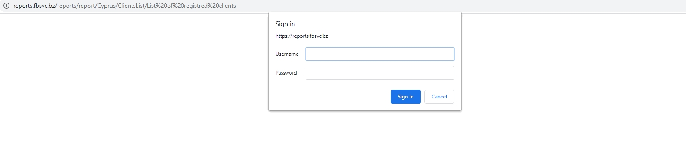

Registration of new accounts and duplicates search
All new registrations are to be checked for
To register and validate new accounts:
1.
2. Log in to the SQL
3. Select the period that needs to be checked and click on "View Report" (from previous date to a future date, e.g. if today is 01/12/2021, please check from 01/11/2021 to 01/13/2021)
4. Open the “Public” Folder – REGISTERS – New accounts register (ver. 2021)